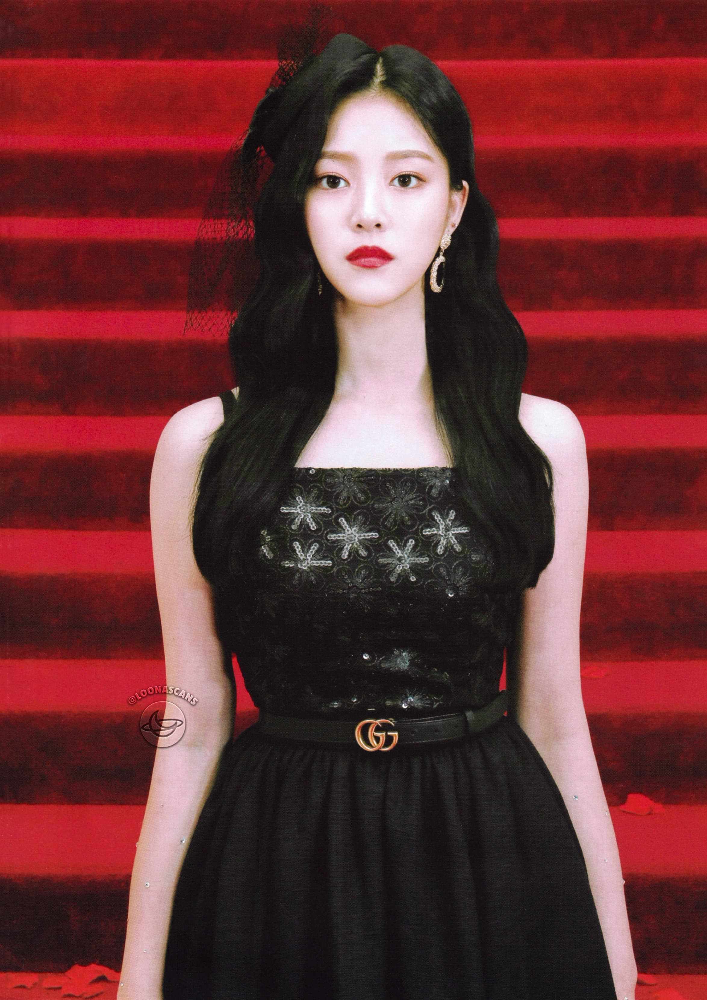

HyunJin is the second member of Loona. She debuted on October 28, 2016 as a member, and released her solo single album "HyunJin" on November 17, 2016.
She debuted as a member of the group's first sub-unit, LOONA 1/3, on March 7, 2017 with the mini album Love & Live. That following October, Hyujin, alongside fellow members HeeJin and HaSeul, became contestants on the survival show MIXNINE, representing their agency and group. She ranked 4th place in the finale, however, was eliminated when the boys' team won against the girls', thus ultimately not being able to debut.
One of her nicknames, Aeyong, comes from the fact that she has been known to meow.
| Hyunjin | |
|---|---|
|  | |
| Full Name | Kim Hyun-Jin (김현진) |
| Birthday | November 15, 2000 (20) |
| Month | November |
| Color | Yellow |
| Animal | Cat |
| Sub-Unit | Loona 1/3 |
| Shape | Square |
| Zodiac Sign | Scorpio |
| Blood Type | AB |
She is the youngest and only daughter of three siblings. Her brothers are ten and eleven years older than her. One of her brothers was in a band called “Bi-o-ne,” and the other is an actor.
HyunJin attended Baeksa Elementary School and Baeksa Middle School in Incheon. She transferred to Shinnam Middle School and later Hansung Girls’ Middle School, both in Seoul. In seventh grade, HyunJin was ranked first in her school in Korean language. She was an athletic student, participating in her school’s soccer, table tennis, basketball, tennis, and badminton clubs. HyunJin also claims to have been so well-known for her looks that by eighth grade, both male and female classmates “would go stand in the halls to see [her].”
Acording to the Color Theory, the ODD EYE CIRCLE should make up the primary colors; yellow (HyunJin), blue (JinSoul), and red (Kim Lip). It is believed HyunJin is meant to be part of ODD EYE CIRCLE's earth, . She is crucial to the LOONAVERSE as she is one of the three primary colors, and it is impossible to make any color without the primary colors.
She is the mirror image to Choerry, which suggests that HyunJin would have Choerry's ability to teleport between dimensions as well. She also has the ability to spread and mix her individual color, yellow, which is key to creating colors like orange, green, brown, and so forth.